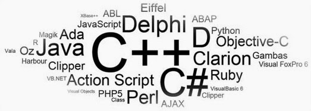

How to become a Hacker
Hacking is an engaging field but it is surely not easy. To become a hacker one has to have an attitude and curiosity of learning and adapting new skills. You must have a deep knowledge of computer systems, programming languages, operating systems and the journey of learning goes on and on.
Some people think that a hacker is always a criminal and do illegal activities but they are wrong. Actually many big companies hire hackers to protect their systems and information and are highly paid. here is the list of most important steps necessary to become a hacker, have a deeper look
Steps:
Learn UNIX/LINUX
NUNIX/LINUX is an open source operating system which provides better security to computer systems. It was first developed by AT&T in Bell labs and contributed a lot in the world of security. You should install LINUX freely available open source versions on your desktops as without learning UNIX/LINUX, it is not possible to become a hacker. .

Code in C language
C programming is the base of learning UNIX/LINUX as this operating system is coded in C programming which makes it the most powerful language as compared to other programming languages. C language was developed by Dennis Ritchie in late 1970’s. To become a hacker you should master C language.
Code in more than one Programming Language
It is important for a person in the hacking field to learn more than one programming. There are many programming languages to learn such as Python, JAVA, C++. Free eBooks, tutorials are easily available online.
Learn Networking Concepts
Another important and essential step to become a hacker is to be good at networking concepts and understanding how the networks are created. You need to know the differences between different types of networks and must have a clear understanding of TCP/IP and UDP to exploit vulnerabilities (loop holes) in system. Understanding what LAN, WAN, VPN, Firewall is also important. You must have a clear understanding and use of network tools such as Wireshark, NMAP for packet analyzing, network scanning etc.
Learn More Than One Operating Systems
It is essential for a hacker to learn more than one operating system. There are many other Operating systems apart from Windows, UNIX/LINUX etc. Every system has a loop hole, hacker needs it to exploit it.

Learn Cryptography
To become a successful hacker you need to master the art of cryptography. Encryption and Decryption are important skills in hacking. Encryption is widely done in several aspects of information system security in authentication, confidentiality and integrity of data. Information on a network is in encrypted form such as passwords. While hacking a system, these encrypted codes needs to be broken, which is called decryption.
Learn more and more about hacking
Go through various tutorials, eBooks written by experts in the field of hacking. In the field of hacking, learning is never ending because security changes every day with new updates in systems.
Experiment A Lot
After learning some concepts, sit and practice them. Setup your own lab for experimental purpose. You need a good computer system to start with as some tools may require powerful processor, RAM etc. Keep on Testing and learning until you breach a system.
Write Vulnerability (Loop hole program)
Vulnerability is the weakness, loop hole or open door through which you enter the system. Look for vulnerabilities by scanning the system, network etc. Try to write your own and exploit the system.

Continue never ending Learning
Learning is the key to success in the world of hacking. Continuous learning and practicing will make you the best hacker. Keep yourself updated about security changes and learn about new ways to exploit systems.
Join Discussions and meet hackers
Most important for a hacker is to make a community or join forums, discussions with other hackers worldwide, so that they can exchange and share their knowledge and work as a team. Join Facebook groups related to hacking where you can get more from experts.